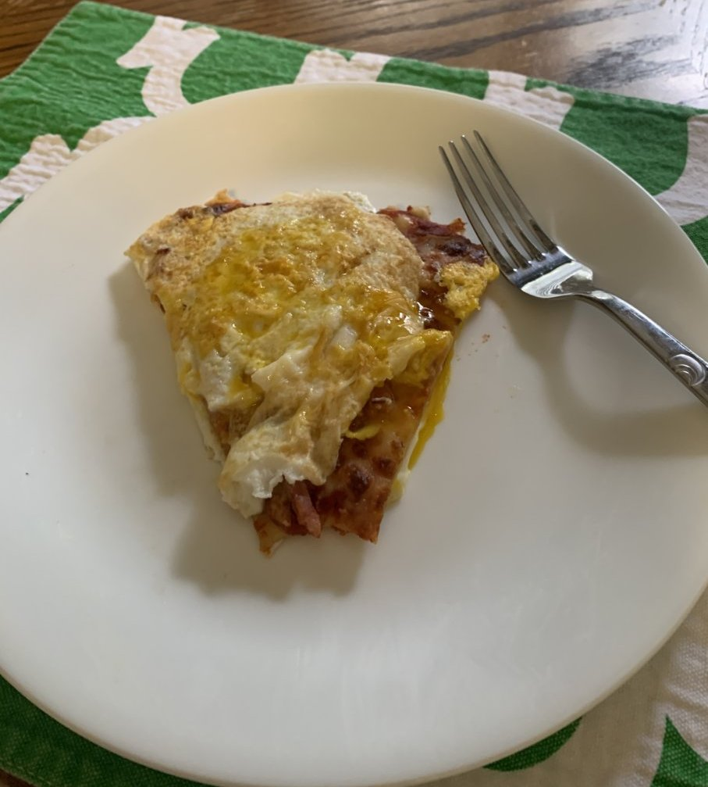

Pizza Over Easy

This recipe answers the age-old question, "What do I do with leftover pizza?". Apparently, "Eat it, dummy." is way too simple for our
complex times. I invented this culinary monstrosity on my honeymoon. Twenty-plus years later, we are still married. Must be love.
Ingredients
- 1 slice of leftover pizza
- 2 Large eggs
- Garlic salt
- Leftover red paper flakes. You didn't throw those packets away did you?
Preparation
- If the pizza is thin crust, cut off the back of the crust so that the pizza slice will lie flat.
- Heat a non-stick or lightly oiled cast iron skillet over medium heat.
- Crack one egg into the skillet and lightly season with garlic salt and red pepper
- Place the pizza slice, face down on top of the egg. Cook for about one minute. The egg will take longer to cook because of the pizza.
- Remove the pizza slice from the skillet and set it aside.
- Crack the other egg into the skillet, and season as before.
- Place the pizza slice, face up, on top of the egg. Cook for about one minute.
- Serve it hot with you favorite breakfast beverage.